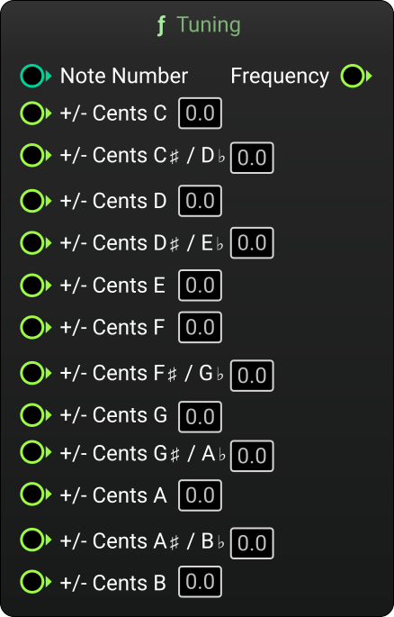

MetaSound Branches
Tuning
Category: Tuning
Generates a frequency based on custom tuning per-note.

Inputs
| Name | Description | Type |
|---|---|---|
| Trigger | Triggers tuning update. | Trigger |
| MIDI Note Number | Input MIDI note number (integer). | Int |
| Reference Frequency | Reference frequency in Hz (default is 440 Hz). | Float |
| Reference Note | Reference MIDI note number (default is 69). | Int |
| Cents 0 | C adjustment in cents. | Float |
| Cents 1 | C♯ / D♭ adjustment in cents. | Float |
| Cents 2 | D adjustment in cents. | Float |
| Cents 3 | D♯ / E♭ adjustment in cents. | Float |
| Cents 4 | E adjustment in cents. | Float |
| Cents 5 | F adjustment in cents. | Float |
| Cents 6 | F♯ / G♭ adjustment in cents. | Float |
| Cents 7 | G adjustment in cents. | Float |
| Cents 8 | G♯ / A♭ adjustment in cents. | Float |
| Cents 9 | A adjustment in cents. | Float |
| Cents 10 | A♯ / B♭ adjustment in cents. | Float |
| Cents 11 | B adjustment in cents. | Float |
Outputs
| Name | Description | Type |
|---|---|---|
| Frequency | Output frequency. | Float |
Charles Matthews 2025